2013 News

Eastern Branch Carol Service and Meeting at Freiston, 7th December 2013
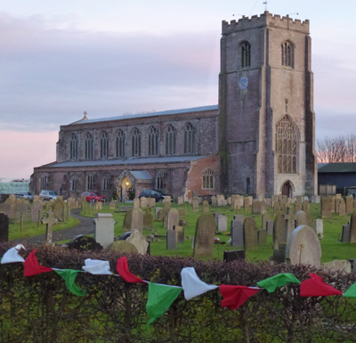
The final Eastern Branch event in 2013 was held at St James, Freiston, at the same time as the Christmas tree festival in church. The afternoon six bell ringing was well supported, prior to the carol service at 5pm, taken by the Rev Andrew Higginson, with Louis Watson as organist. Four readings told the Christmas story in between carols, followed by an address and prayers.
The festival café stayed open, manned by Maggie Bennett, Jo French, Simon Pearson and the local churchwarden for a good choice of food for tea. We stayed put for the meeting chaired by President Edward Vear, who asked for a few moments silence in memory of John Pratt, a former Eastern Branch member. Edward moved swiftly through the items on the agenda, Sam Napper (Boston) was elected a member of the Guild, Alan Payne, Guild Master, gave an update on the Guild Review (see also the news article below), the Eastern Branch programme for next year was discussed and £38.60 was collected for the Branch bell repair fund (which included £10 from John Collett, in lieu of a Christmas present from his sister-in-law). The vote of thanks was the final item, of what must have been one of the warmest December meetings we have ever had, as the heating had been on in church all day for the festivities.
Val Wild
Guild Requests Comments on Review 'White Papers', 7th December 2013
Most of you will be aware that the Guild is conducting a fundamental Review of how it operates (you may remember the Questionaires that were distributed earlier in the year as part of this work [see Newsletter article below]). A number of Working Groups have been gathered to discuss a wide range of topics associated with the Guild's work and role. Each Working Group has been tasked to produce a "white paper" proposing how the Guild's activity may be improved or enhanced. The first four of these white papers are now available and the Guild is requesting feedback and comments from all members on the ideas. Alan Payne, the Guild Master, will be at our meeting at Freiston today to outline the work conducted so far.
The 'White Papers', together with a summary overview, can be downloaded here;
Paper 1301: Members, Officers & Committees (PDF)
Paper 1302: Training, Ringing Centres & Ringing Hubs (PDF)
Paper 1303: Ringing Standards & Striking Competitions (PDF)
Paper 1304: Public Relations & Communications (PDF)
Any comments can be sent to the Guild either via myself (click: here) or direct to the Guild Master (click: here).
Simon Pearson
Go Pudsey! 8th November 2013
£11 was raised at Sutterton on Friday 8th November for 'Children in Need', with Pudsey stickers for all those that completed a course of 'Pudsey Surprise Major'.
Val Wild
Branch Practice at Halton Holgate, 2nd November 2013
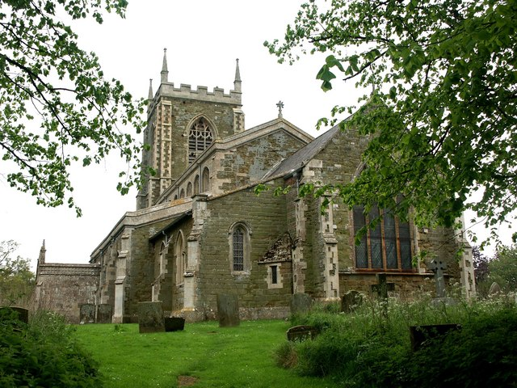
There was a good proportion of learners amongst those that attended the Saturday afternoon Branch Practice at Halton Holgate.These bells are not rung very often and they needed a bit of waking up, but things soon settled down and there was plenty of good practice including; called changes, some Doubles and Plain Bob Minor.
Mark Hibbard
Branch 'Race-Night' Fund-Raising Evening, 26th October 2013
On the evening of October 26th, a group of 17 hardened gamblers assembled in Surfleet for the “Betty Collett Cup Meeting” - Eastern Branch's fund raising Race Night in support of the Guild Bell Repair Fund.
There was a full race card of eight races, each race having eight horses. All of the horses in the first seven races had been pre-sold to owners from throughout the branch for the very modest sum of £2-50 each! Appropriately enough, out of the seven winning owners, three were members of the Collett family.
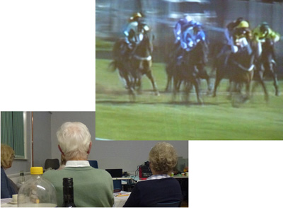
The last race of the night was the “Betty Collett Cup”. This was a competition between the winning horses from the previous seven races, plus an eighth horse that was auctioned off just before the race for the magnificent sum of £16-00. The winner of the race was 'High Jinx' owned by Graham Collett, who will be the proud holder of the Betty Collett Memorial Cup for the next 12 months. Running a close second in the race was 'Gravy', whose owner Penny Fountain won a voucher for Sunday lunch for two at a local hostelry, kindly donated by John Collett.During the evening, betting on the races was fast and furious, perhaps becoming a little more so as the losers drowned their sorrows and the winners celebrated their success. At the halfway point in the proceedings there was a welcome break for a superb sausage and mash supper produced by Annette Rhodes.
Overall, we raised £340-00 for the Guild bell repair fund, for which our thanks go to all who participated in any way in the evening. In closing, we must thank our sponsors for the evening, two local businesses: David Reynolds Motor Mechanic and Willoughby Tree Services.
Phil Ford
Guild 8-Bell Competition at Kirton-in-Lindsey, 19th October 2013
A team from the Eastern Branch travelled to Kirton-in-Lindsey to compete in the Guild 8-Bell striking competition. Unfortunately they returned empty-handed, being placed fifth overall. The test piece was two courses of Plain Bob Triples, but there was 'major surprise' when the final scores included penalties for both Eastern and Central Branches who were judged to have exceeded the allowed practice time. Whilst the penalty made no difference to Eastern Branch's final position, it demoted Central Branch from an otherwise joint first place, leaving West Lindsey Branch clear winners.
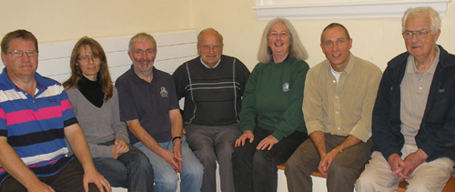
Out, but not down! Members of the Eastern Branch Team
For the full results and more pictures, see Jonathan Clark's report on the Guild website: [click here]
Mark Hibbard
Branch Outing, 5th October 2013
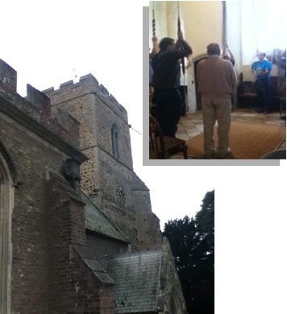
The first bells we went to were in Norfolk and the church was called Stow Bardolph which had 8 bells. The was ok but not the best because they felt springy on backstroke and they were light bells. I tried the 2nd, 3rd and 4th. I thought the 3rd was the worst out of the 3, the 4th which was ok as it didn't feel springy as much and the 2nd was the best because it wasn't very springy was the lightest I have ever rung and was really easy to stand due to the tiny bit it took to stand and not go really far back up. It was a nice church but there was a woman made in wax which everyone was talking about as it was felt a very strange object to have in a church.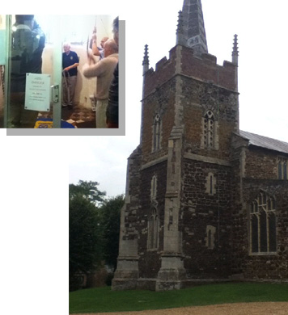
The second church was in Downham Market and was called St. Edmund which had 8 bells again. The bells were nicer than the other ones but the backstroke was similar to those in Stow Bardolph but not as bad. We went into the town for lunch and it was surprising as it didn't look like a usual Saturday in a town because not many people were there. I felt where we stopped wasn't as good as last year because we were in such lovely scenic area with a river and it was nice.
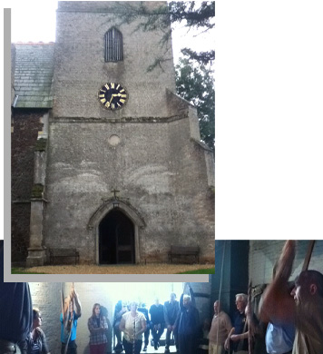
The third bells we went to were All Saints in Hilgay. There were 8 bells at the church and they were as nice as the Stump where I ring on Sundays and I know how they feel. The worst thing I don't like about them is that the Sally was really old and you could feel the rope in the Sally. But they were nice bells.
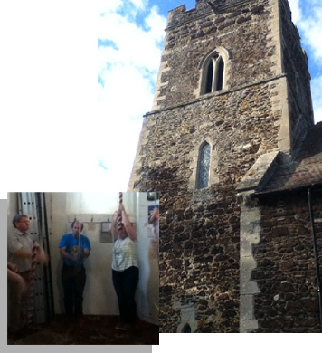
We went on to St. Mary's in Denver. There were 6 bells. They were nice bells and although they were light they weren't as light as the first bells we had.
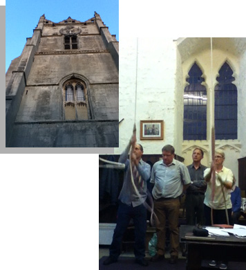
The final bells we went to were at Wisbech and the church is called St. Peter's which had 10 bells. The bells were heavy but they were quiet easy when I got used to it. I had to go slower because there were so many. My dad (Richard Pickwell) was scared of doing it but he did it and I thought that he was good.
Overall I think they were all good but I enjoyed the six bells more than the others. We enjoyed our day and I look forward to where we might go next year.
Report and Photographs: George Pickwell
Guild 6-Bell Competition at Barrowby and Denton, 14th September 2013
Bands from Coningsby and Alford ventured west of the A1 to represent the branch at this year's 6-Bell striking competition, both teams competing for the Edward Colley Plate at Barrowby.
Nine towers were entered for the 'Plate' and it was clear early on that the competition would close.
In the end Gainsborough won by a clear margin, but - with only 25 faults covering second to ninth places - it was Coningsby that led the chasing pack and stole the 'Ted Colley Plaque' as runners up, with Alford finishing a creditable eigth.
For a more detailed report, including full results and pictures, see Jonathan Clark's article on the Guild website: [click here]
Mark Hibbard
Branch Practice, Burgh le Marsh & Gunby, 7th September 2013
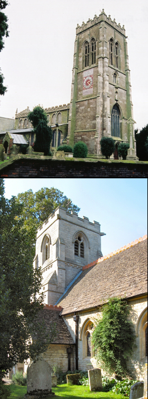
Two very different rings were on offer at the Branch Practice on Saturday 7th September: the 17½ cwt eight at Burgh le Marsh and the 6½ cwt five at Gunby. There was a good turnout at both towers and a range of ringing to suit all abilities.
Towards the end of the evening Peter Limage provided a challenge for the more adventurous by calling a touch of eight mixed Doubles methods. This touch was deemed to have been completed successfully (although it may have come round at Handstroke?), and those thinking of having a go next time may be interested in the following tips:
A BLUFFER'S GUIDE TO MIXED DOUBLES
ST SIMON'S: The one everyone knows (?). Assume a relaxed and confident stance. If it sounds rough: gaze nonchalantly at the floor.
ST MARTIN'S: The one everyone considers to be most similar to the one everyone knows (although no more similar than several of the others in this group!). Ring as you would for St Simon’s, but do something a bit different on the front. If it sounds rough: lift your nonchalant gaze briefly from the floor to glance knowingly at whoever looks most confident.
EYNESBURY: Remember that this will be unfamiliar territory for most of those ringing. Assume a more alert stance and a studious expression. If it sounds rough: Lead forcefully.
ST OSMUND'S: It helps to know that St Osmund is the patron saint of insanity, ring accordingly. If it sounds rough: smile like you’ve never had so much fun!
ST NICHOLAS: Exactly the same as the one everyone knows, except for the bit that’s different which … er … everyone knows, and – of course (?) – apart from the Bobs. Ring as you would for St Simon’s, but do something a bit different in the middle and – of course – at a Bob. If it sounds rough: shout “St Nicholas!” at whoever looks least secure.
WINCHENDON PLACE: Wend your way generally up and down between the Lead and the Lie, making places here and there and doing things you wouldn’t normally do at a Bob. If it sounds rough: move discreetly to making places in another place.
HUNTLEY PLACE: Ring a combination of the two methods that have sounded least rough so far. If it sounds rough: avoid fourth’s place (statistically it’s more likely that you should be somewhere else - except at a Bob when fourth’s place is a good bet, and also provides the best view of those confused about whether or not to make thirds).
ST REMIGIUS: Chances are everyone’s bluffing this one. Ring any Doubles method that takes your fancy and remain in the plain course even if a Bob is called. If it sounds rough: wait until the Treble leads and then insist on ringing Rounds regardless of what the Conductor calls.
Mark Hibbard
Eastern Meets Southern at Lincoln Cathedral, 4th August 2013
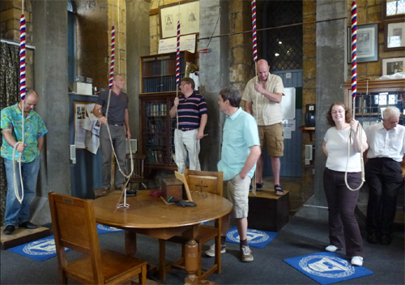
On Sunday 4th August 2013, ringers from the Southern and Eastern branches of the Lincoln Diocesan Guild, met at 2.15 in the Ringers’ Chapel before ascending to the ringing chamber to ring for evensong. Les Townsend was present to ensure fair play, and open the windows, the fresh air whipped through and caused some fabric of the cathedral to vibrate, Les suggested that it was the sound of someone’s knees knocking!
Barry Jones, Southern Branch ringing master, was in charge and a variety of methods and plenty of rounds and call changes on 12 were rung, until 3.45, when some ringers stayed to the service and the rest found their way home. This was an opportunity not to be missed, a chance to ring changes on more bells than usual, and with different ringers, well worth the drive.
Val Wild
Simulator Success at Heckington Village Show, 27th - 28th July 2013
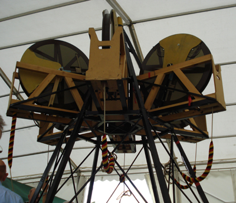
Three volunteers from Eastern Branch, with others from across the Guild, helped Heckington ringers operate the Guild's 'Sixbell' simulator at this year's Heckington Village Show.
Over the course of the weekend more than 400 visitors to the show enjoyed 'Having a Go' on the simulator and left comments in the 'Visitors Book' (the actual total was somewhat higher as not everyone signed the book)! About 14 people also registered their details for further information with a view to receiving proper lessons (these have been provided to the relevant Tower Captains for follow-up).
The popularity of the simulator, combined with the good weather, meant that the event was quite exhausting for all, but plenty of tea and cake was on hand to maintain the helpers' energy. The enthusiasm of the visitors (of all ages and abilities) made it an enjoyable experience, and we were videoed and filmed from every angle!!
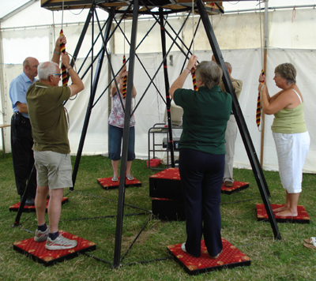
Towards the end of the show a band successfully completed a Quarter Peal of Plain Bob Doubles, dedicated to the memory of Frank Pinchbeck in celebration of his involvement as Medical Officer, Chairman and President of Heckington Show for almost 50 years, and in gratitude for his work within Heckington and surrounding villages. Sadly, Dr Pinchbeck passed away a few days prior to this year's show. This Quarter Peal was also a 'first' for Heckington ringer Honorine Ball, quite an achievement - especially given the live audience and variety of noisy distractions in the showground!
Many thanks to all those that helped!
Report: Audrey Harrison
Photographs: Russell Green
Boston Bells Welcome HRH The Princess Royal, 24th July 2013
The ten bells of Boston Stump rang out on Wednesday morning the 24th July 2013 to greet Her Royal Highness The Princess Royal on her visit to St. Botolph's Church, Boston, for the Service of Dedication of the Puritan Path tourism project.
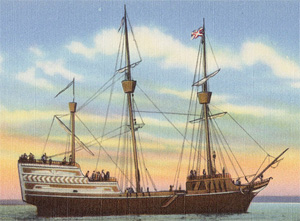
On the 8th April 1630 prominent members of the Rev. John Cotton's congregation of St. Botolph's Church set sail on board the "Arbella" for New England to establish the Massachusetts Bay Colony.
On the 7th September 1630 they named their new Massachusetts Bay settlement "Boston" in recognition of the home town of many of them and in honour of their Puritan inspiration Rev. John Cotton.
The Puritan Path project has been developed to commemorate in visual form twelve of these men and women who were prominent in the founding of the New Colony. Twelve "stones" are sited on either side of the church footpath and a further stone by the river wall portrays the "Puritan Vision".
It is believed that there is no other memorial in this country celebrating their achievements and influence in the New World.
Tom Freeston
The Eastern Branch Barbeque at Sibsey Trader Mill, 6th July 2013
Congratulations to the Lincolnshire Poachers who came joint 4th out of 16 teams at York in the Ringing World National Youth striking competition on Saturday 6th July. Well done to Joe Waters from Alford, who rang as one of the Poachers.
On the same day, ringing at Leverton preceeded the Eastern Branch barbeque at Sibsey. Mark Hibbard stood in as ringing master, and the dust was disturbed at St Helena’s.
The barbeque at the windmill started at 7pm, Ian and Richard Willoughby were the cooks, sausages and burgers were accompanied by salads, and a wide variety of delicious puddings followed.
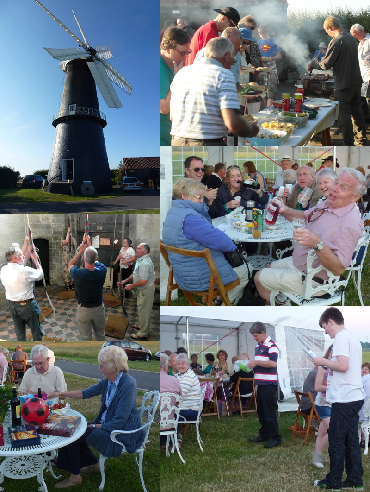
Tom Freeston was in charge of the raffle, aided by Viv Simpson, and the Evans family once again produced a fun quiz with royal connections which was won by David Bennett, also Matthew Evans won the under 5’s with one correct answer, Charlotte Evans won the 5 to 16’s with 37 correct answers out of 75. As usual, there was a bit of healthy debate about some of the answers, but the judge’s decision was final.
Edward Vear, Eastern Branch president, gave the vote of thanks to Ian Ansell, Robert and all who had helped in any way to the success of the evening, which raised £500 for the Eastern Branch bell repair fund. A short meeting voted in favour of paying £8 for Joe’s striking competition Lincolnshire Poachers T-shirt, out of Eastern Branch funds.
The weather was fantastic, it was good to see everyone out and about enjoying themselves on the 11th year of BBQs at the windmill, some people took the opportunity to go up the mill and admire the view from the balcony.
Report: Val Wild
Photographs: Brian Moore and Val Wild
Kirton Carries Home Cup on Derby Day, 1st June 2013
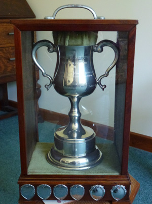
The Eastern Branch six bell striking competition was held at St Mary’s, Mablethorpe during the evening of Saturday 1st June 2013. Four teams met at 6 pm and rang a practice piece of up to three minutes, followed by a test piece of 240 changes. The judge, Les Townsend, master of the Lincoln Cathedral Company of Bell Ringers, who stood in at short notice, gave helpful words of encouragement to all the teams and rated them as follows:
First: Kirton in Holland ringing plain bob doubles, 12 faults, a steady piece of ringing, enjoyable to listen to.
Second: Alford, ringing call changes, 26 faults, a good effort.
Third: Coningsby, ringing call changes, 32 faults, there was some poor leading, but also some well spaced striking.
Fourth: Fishtoft, ringing plain bob doubles, 36 faults, the ringing contained a few method mistakes, but the tenor man rang well.
Les presented the George Brewster cup to Rhoda Reynolds representing Kirton, who will hold it for a year. The first two teams can now go through to the Guild Cup 6-bell striking competition, and the second two teams can go through to the Guild Plate competition in September. A certificate was presented by Les, to each team recording their place in the competition.
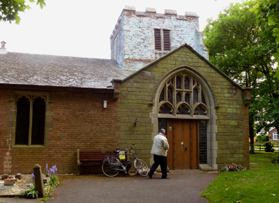
There was a short meeting when Edward Vear (Eastern Branch President) reminded everyone of the next event, a BBQ at Sibsey Trader Mill on July 6th at 7pm, tickets are available now. Also, the Ridgman Trophy 10 bell striking competition is being hosted by the Lincoln Diocesan Guild on the back ten at Surfleet on Saturday June 15th. The surprise major practice will be a week later than normal on the 21st June, as there is a cheese and wine event on in Sutterton church on Friday 14th when the practice would have normally been held. This is prior to an open garden weekend, fund raising for the church. Copies of the Guild news sheets for June were available.
Gareth Rowland kindly made the arrangements for the competition at Mablethorpe, and also the tea. Open ringing continued until 8.30ish, with Kate Meyer in charge.
Val Wild
Eastern Branch Meeting at Kirton & Swineshead, 4th May 2013
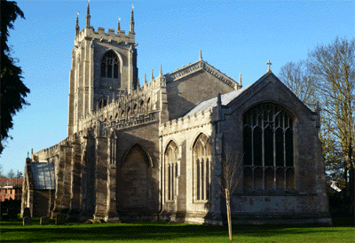
Ringing commenced at SS Peter and Paul, Kirton on the afternoon of Saturday 4th May 2013, Kate Meyer, Eastern Branch ringing master, was in charge. This was followed by a short drive to St Mary’s, Swineshead for a service touch, and the service was taken by Rev Jenny Dumar, from the Guild green service book, the local organist Rob played for us.
Tea was held at Swinfields where Rhoda Reynolds had organised the lounge for us where we also had the meeting. The vicar joined us for tea, plenty of sandwiches and cake were soon consumed.
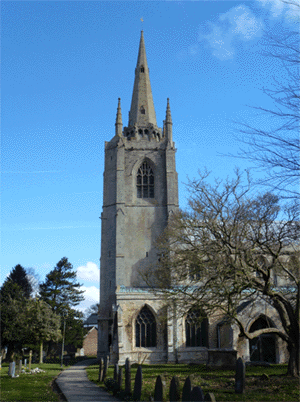
Edward Vear, our newly elected Eastern Branch president, chaired the meeting, starting by welcoming everyone especially the visitors from other branches. Unfortunately Simon was unable to attend the meeting, so Val filled in as secretary. The business was complete in forty-five minutes, Edward concluded with the vote of thanks. £23.41 was collected for the bell repair fund, £29.50 profit from tea will also go to the BRF.
The Guild 100 club draw was made by Dot Mason, during the meeting, first prize £10 was won by Willingham tower, and second prize £5 was won by Annette Rhodes, Surfleet.
More ringing at Swineshead followed the meeting, and apart from a near miss with new trousers and an insufficiently tightened belt, was without incident, with a wide variety of methods rung.
Val Wild
Mayor's Award Marks Tom's Outstanding Service to Boston, 18th April 2013
On Thursday the 18th April, at a ceremony in the Borough Council Chamber, Tom Freeston received a Community Award from Mayor of Boston Cllr Colin Brotherton. The award formally recognises the "dedicated commitment and invaluable service" Tom has provided to his town over many years of ringing at 'the Stump' - including his 41 years as Tower Captain.
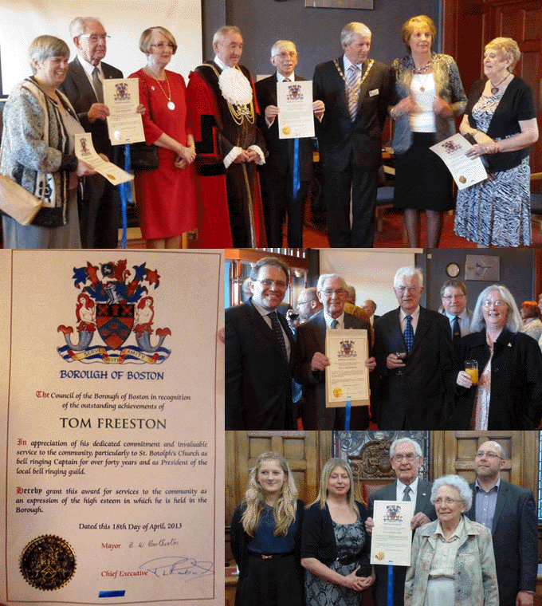
Val Wild attended the ceremony together with members of Tom's family and fellow ringers; Simon Pearson, John Collett and Mick Smith. Val writes:
"It was a very interesting evening, Tom was one of four people to receive an award that evening in the Council Chamber, Boston. There was a buffet afterwards where people were able to have a chat and enjoy the refreshments. Tom's son arrived in shorts and T shirt, asking his Mum if there was a dress code for the evening? Much to Janet's relief he had also brought his suit with him. After receiving his award, Tom gave the following modest speech of acceptance:"
"Mr Mayor and Mayoress, deputy Mayor and deputy Mayoress, Councillors, ladies and gentlemen. Thanks to Councillor Helen Staples for her kind words, and I am very pleased and honoured to receive this Award for Service to the Community. When I received the letter in January informing me that the Council had agreed to select me as a recipient for this Award, my thoughts went way back to 1946 when I was 14. This was when my late brother, who was also a bell ringer at Boston Stump, introduced and taught me the art of bell ringing (or campanology to give it’s posh name).
My interest in bell ringing has given me the opportunity to ring bells at many other churches and cathedrals, and also to make numerous new friends from far and wide. No doubt some of you will have seen the advert for Mars Bars on the television where the bell ringers are swinging around on the bell ropes after consuming the chocolate bars. I can assure you that this is not the correct way to ring the church bells! However, I do feel that the exercise is very good considering that the heaviest bell in the Stump weighs just over one ton. I am sure many of you have seen footage of yesterday’s funeral (Margaret Thatcher’s) in London, when the sound of church bells played a prominent part in the proceedings. However, whilst the bells were mentioned nothing was said about the bell ringers as we are mostly unseen in the ringing room, high up in the tower.
May I therefore suggest the next time you hear church bells being rung, to please give a thought for the men, women, girls and boys who have climbed numerous steps and are pulling the bell ropes.
It is, indeed a great honour and privilege to ring the bells at our world famous Boston Stump, which in addition to ringing prior to Sunday and other services, has been to greet royalty when visiting the church, and also last year on the 27th June when the Olympic torch passed through the Market Place. I hope to be able to continue for many more years provided I can climb the 200 steps to the ringing room. I have been very lucky to have received valuable help from many local bellringers, some who are present here tonight, and I would like to take this opportunity of thanking them for all the assistance they have given me in the past.
Lastly, I would like to thank my wife and family for all the encouragement they have given me".
A Quarter Peal at Fishtoft that day also celebrated Tom's Award. Read more...
For more information, see also Boston Borough Council's report ... [Click here].
Eastern Branch Practice at Alford, 6th April 2013
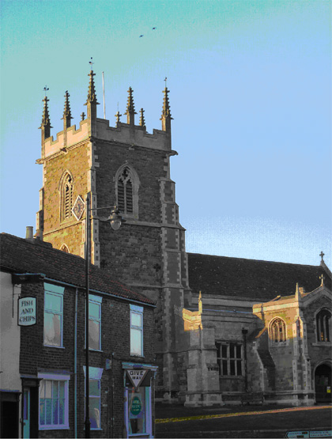
Fortunately we were spared the showers (snow or other) when we gathered to ring at Alford St Wilfrid, for the April meeting of the Eastern Branch, on Saturday 6th April.
Around twenty ringers met to enjoy the easy going six bells and rang a variety of methods, something for everyone and no excuse for not having an opportunity to have a go at a new method.
Our president, Edward Vear, welcomed us to his tower and Kate kept the bells ringing as ringing master. Phil Ford was on hand to receive Guild raffle ticket money and stubs, with a few more tickets available to sell, for those who missed out the first time round.
A welcome brew plus biscuits, was offered half way through the evening and a collection for the Eastern Branch bell repair fund made £20.
The 2012 Guild report is hot off the press and our secretary, Simon Pearson handed them out to those members present.
Val Wild
Eastern Branch Practice at Boston Stump, 2nd March 2013
At 10 am on Saturday 2nd March 2013, members of the Eastern Branch of the Lincoln Diocesan Guild met to ring at The Stump in Boston. Including vistors from Loughborough, Hertfordshire and London, there were seventeen ringers of vaying abilities. Kate Meyer, ringing master, kept the bells ringing for two hours with a mixture of methods from rounds and call changes to Stedman Caters. There was something for everyone, and a chance to try something new.
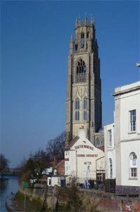
Tom Freeston was downstairs acting as doorman, and George Pickwell was in charge of clock chimes and keys upstairs.
Part way through there was a short meeting, when all the ringers were welcomed, it was mentioned that there is a surprise major practice at Sutterton on Friday 8th March 2013 at 7.30, and the next branch practice is at Alford on Saturday 6th April. Then Mark Hibbard proposed Russell Green from Coningsby for membership of the Eastern Branch, all were in favour and he was elected to the Branch. A collection for the bell repair fund raised £10.50.
Ringing continued until 12 noon, then some ringers went to admire the view from the balcony, the weather being perfect for this. The descent was made using the second spiral staircase to avoid having to pass any tourists on their way up.
Val Wild
AGM Summary Report
On Saturday 26th January the Eastern Branch held its AGM at Sibsey. A touch of Grandsire Triples preceded a service led by the Revd Rosemary E. Taylor, including a lesson and sermon on the subject of the pomegranates and bells on Aaron's robe. The organ was played by Louis Watson from Boston.
After a fine lunch Tom Freeston opened the meeting with a prayer, remembering especially Eastern Branch member Paul Bennett who passed away recently.
Officers' Reports were read and accepted. It was noted that the BBQ at Sibsey Trader has now been running for 10 years and in that time has raised £5200!
Guild Master Alan Payne attended this year's Meeting to explain in more detail the importance of the Guild's ongoing 'Strategic Review', and to encourage members to participate by responding to the Questionnaire (see article below).
Most Officers were re-elected to their posts with one notable exception: Tom Freeston stood down as Branch President, being replaced by Edward Vear. Tom was presented with a silver blotter in thanks for his work over many years.
Seven new members were elected, all present welcomed them to the Guild.
The programme of events for 2013 was outlined, the annual outing this October will be to North Norfolk.
Summarised from Jonathan Clarke's detailed report on the Guild website [Click here to see Jonathan's full report and pictures]
Guild Seeks Members' Views As Part Of Ongoing 'Strategic Review'
In the middle of 2012 the Lincolnshire Diocesan Guild embarked on a wide-ranging 'Strategic Review' of its Objectives and Operations, in the belief that significant changes to the way the Guild operates are needed to reverse the current decline in membership and in the level of service provided for ringing bells for church and community.
The work has been divided between five 'Working Groups' (Teaching & Coaching, Reccruitment & Retention, Development of Ringers & Ringing Standards, Guild & Branch Organisation, and Guild Objectives & Rules) co-ordinated by a Steering Group.
The review is expected to take two to three years, and in November the Guild issued a report on progress to date (click here to read the report on the Guild's website).
As part of the Review the Guild is inviting all members to consider the report and provide comments or suggestions.